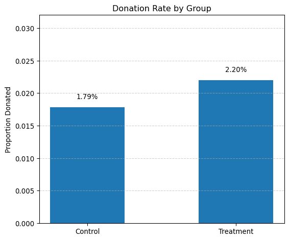
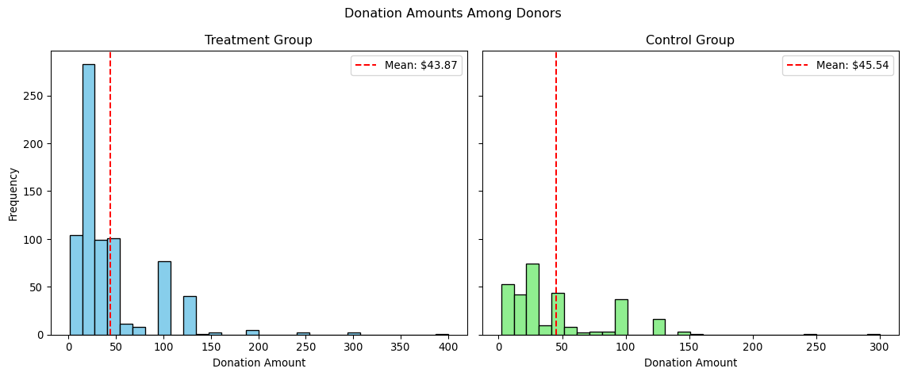
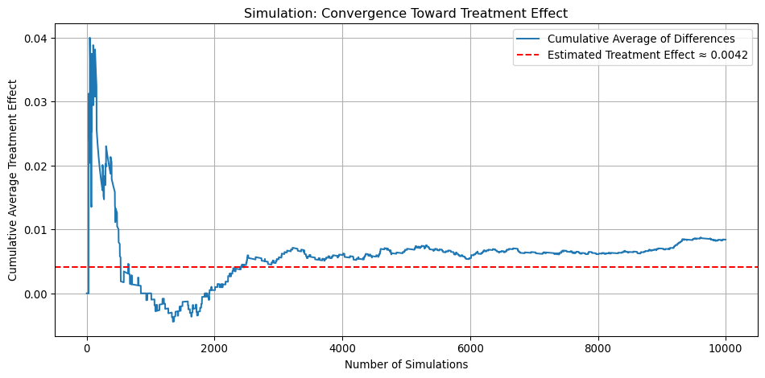
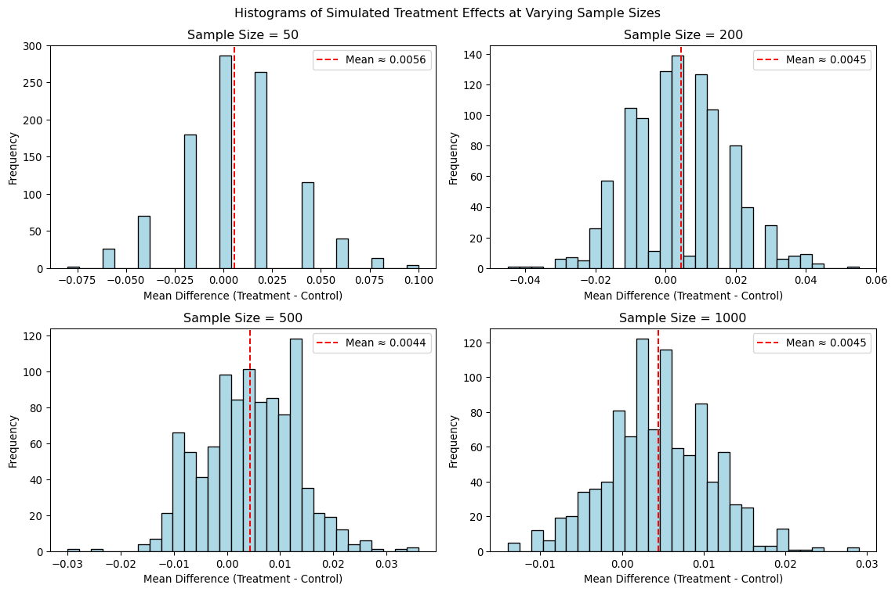

Dean Karlan at Yale and John List at the University of Chicago conducted a field experiment to test the effectiveness of different fundraising letters. They sent out 50,000 fundraising letters to potential donors, randomly assigning each letter to one of three treatments: a standard letter, a matching grant letter, or a challenge grant letter. They published the results of this experiment in the American Economic Review in 2007. The article and supporting data are available from the AEA website and from Innovations for Poverty Action as part of Harvard’s Dataverse.
In their 2007 paper published in the American Economic Review, Dean Karlan and John List explored the behavioral economics of charitable giving through a large-scale natural field experiment. They sought to answer a core question in fundraising strategy: Does the way a donation appeal is framed—particularly with the use of matching grants—significantly influence donor behavior? While prior research had focused heavily on tax incentives and the “supply side” of giving, Karlan and List shifted attention to the “demand side,” providing some of the first rigorous evidence on how potential donors respond to price-like mechanisms in real-world charitable campaigns.
This project seeks to replicate their results. ## Data
Description
The experiment was conducted in collaboration with a liberal nonprofit organization in the United States that focuses on civil liberties. The researchers utilized a direct mail fundraising campaign, sending letters to over 50,000 prior donors from the organization’s database. Each recipient received a four-page fundraising letter that was identical in content, except for three randomized elements in the treatment group.
The individuals were divided into:
Control Group: Received a standard donation request letter, with no mention of a matching grant. Treatment Group: Received a letter including a paragraph that announced a matching grant from a “concerned fellow member.” Within the treatment group, letters were further randomized across three dimensions:
Match Ratio: $1:$1 (every dollar donated is matched with $1) $2:$1 (every dollar is matched with $2) $3:$1 (every dollar is matched with $3) Maximum Match Amount: $25,000, $50,000, $100,000, or left unstated Suggested Donation Amounts: Based on the recipient’s previous highest donation, the reply card listed either the same amount, 1.25×, or 1.5× that amount The match offer was framed both in the text of the letter and visually highlighted on the reply card included in the envelope. The control group’s reply card featured only the organization’s logo.
Variable Definitions
Variable
Description
treatment
Treatment
control
Control
ratio
Match ratio
ratio2
2:1 match ratio
ratio3
3:1 match ratio
size
Match threshold
size25
$25,000 match threshold
size50
$50,000 match threshold
size100
$100,000 match threshold
sizeno
Unstated match threshold
ask
Suggested donation amount
askd1
Suggested donation was highest previous contribution
askd2
Suggested donation was 1.25 x highest previous contribution
askd3
Suggested donation was 1.50 x highest previous contribution
ask1
Highest previous contribution (for suggestion)
ask2
1.25 x highest previous contribution (for suggestion)
ask3
1.50 x highest previous contribution (for suggestion)
amount
Dollars given
gave
Gave anything
amountchange
Change in amount given
hpa
Highest previous contribution
ltmedmra
Small prior donor: last gift was less than median $35
freq
Number of prior donations
years
Number of years since initial donation
year5
At least 5 years since initial donation
mrm2
Number of months since last donation
dormant
Already donated in 2005
female
Female
couple
Couple
state50one
State tag: 1 for one observation of each of 50 states; 0 otherwise
nonlit
Nonlitigation
cases
Court cases from state in 2004-5 in which organization was involved
statecnt
Percent of sample from state
stateresponse
Proportion of sample from the state who gave
stateresponset
Proportion of treated sample from the state who gave
stateresponsec
Proportion of control sample from the state who gave
stateresponsetminc
stateresponset - stateresponsec
perbush
State vote share for Bush
close25
State vote share for Bush between 47.5% and 52.5%
red0
Red state
blue0
Blue state
redcty
Red county
bluecty
Blue county
pwhite
Proportion white within zip code
pblack
Proportion black within zip code
page18_39
Proportion age 18-39 within zip code
ave_hh_sz
Average household size within zip code
median_hhincome
Median household income within zip code
powner
Proportion house owner within zip code
psch_atlstba
Proportion who finished college within zip code
pop_propurban
Proportion of population urban within zip code
Balance Test
As an ad hoc test of the randomization mechanism, I provide a series of tests that compare aspects of the treatment and control groups to assess whether they are statistically significantly different from one another.
In this step, we’re comparing the “months since last donation” (mrm2) between the treatment and control groups using two different methods: a manual t-test and a linear regression. The t-test helps us determine whether there’s a statistically significant difference in the average time since last donation between the two groups. Then, we use a simple linear regression (mrm2 ~ treatment) to estimate the same difference — where the treatment variable acts as a binary indicator (1 for treatment group, 0 for control). We summarize both results in clean, readable tables to clearly report the group means, differences, and statistical significance of the treatment effect. This allows us to confirm whether the random assignment successfully balanced this pre-treatment variable, which is an important validation step in any randomized experiment.
First, I analyze whether matched donations lead to an increased response rate of making a donation.
Let us visualize the donation rates for the treatment and control groups. We calculate the proportion of people who donated (gave == 1) in each group, then create a bar plot comparing these rates side by side. Each bar shows the average donation rate for its group, and we add labels above the bars to display the exact percentages. This plot gives a quick and intuitive view of how the treatment — receiving a matching donation offer — affected the likelihood of giving. This visualization complements our statistical analysis and helps illustrate the extensive margin effect of the treatment (i.e., whether more people chose to donate).

Next step, we’re comparing donation rates between the treatment and control groups using two statistical approaches: a t-test and a simple linear regression. First, we perform an independent t-test to check if there is a statistically significant difference in the proportion of people who donated (gave) between the two groups. We summarize the group means, standard errors, and their difference in a clean table. Next, we run a bivariate linear regression (gave ~ treatment) to estimate the effect of treatment assignment on donation behavior. The treatment variable serves as a binary indicator (1 for treatment, 0 for control), and the coefficient tells us how much more (or less) likely someone is to donate if they were in the treatment group. Together, these analyses help us quantify and assess the causal impact of the matching donation offer on donation participation (i.e., the extensive margin).
import pandas as pdimport numpy as npfrom scipy import statsimport statsmodels.formula.api as smf# --- Step 1: Split groups ---treated = df[df['treatment'] ==1]['gave']control = df[df['treatment'] ==0]['gave']# --- Step 2: T-Test ---t_stat, p_value = stats.ttest_ind(treated, control, equal_var=False)# --- Step 3: Create a clean summary table for T-Test ---t_test_table = pd.DataFrame({'Group': ['Treatment', 'Control'],'Mean (gave)': [treated.mean(), control.mean()],'Standard Error': [ treated.std(ddof=1) / np.sqrt(len(treated)), control.std(ddof=1) / np.sqrt(len(control)) ]})# Add difference row with np.nan for missing Std. Error (to avoid FutureWarning)t_test_table.loc[2] = ['Difference', treated.mean() - control.mean(), np.nan]print("üìä T-Test Summary:\n")print(t_test_table.round(4))print(f"\nt-statistic: {t_stat:.4f}")print(f"p-value: {p_value:.4f}")# --- Step 4: Linear Regression ---model = smf.ols('gave ~ treatment', data=df).fit()# --- Step 5: Format regression summary into a table ---reg_table = pd.DataFrame({'Coefficient': model.params,'Std. Error': model.bse,'t-Statistic': model.tvalues,'P-Value': model.pvalues}).round(4)print("\nüìâ Linear Regression Summary:\n")print(reg_table)
üìä T-Test Summary:
Group Mean (gave) Standard Error
0 Treatment 0.0220 0.0008
1 Control 0.0179 0.0010
2 Difference 0.0042 NaN
t-statistic: 3.2095
p-value: 0.0013
üìâ Linear Regression Summary:
Coefficient Std. Error t-Statistic P-Value
Intercept 0.0179 0.0011 16.2246 0.0000
treatment 0.0042 0.0013 3.1014 0.0019
What This Means About Human Behavior We’ve learned that people are more likely to give when they know their donation will be matched. Even though the increase might seem small numerically, the effect is meaningful: simply mentioning a matching gift nudges more people into taking action.
This tells us that:
Social cues matter. When people know others are also giving (like a “concerned member” offering a match), it makes them feel part of something. Framing matters. The idea that their donation will “go further” encourages behavior change. Behavior is not purely rational — a simple sentence in a letter changes what people do with their money. This is why Table 2A (Panel A) in the paper is so important — it quantifies how a subtle psychological nudge leads to real-world donations.
Now let us estimate a probit regression model to analyze the effect of the treatment on the likelihood of making a donation. The dependent variable is gave (a binary indicator for whether the individual donated), and the independent variable is treatment (1 if the person received the matching offer, 0 otherwise). Using a probit model allows us to model the probability of donating as a nonlinear function of the treatment assignment, assuming a standard normal distribution of the error term. This method is appropriate for binary outcome variables and provides a more statistically rigorous approach than a linear probability model. The results will help us assess whether the treatment significantly increases the probability of giving, and by how much (on a latent scale).
import statsmodels.api as smimport statsmodels.formula.api as smf# Run the probit model: gave ~ treatmentprobit_model = smf.probit('gave ~ treatment', data=df).fit()# Print summaryprint(probit_model.summary())
NOTE: Linear regression results appear replicate Table 3 column 1 in the paper. Probit results do not, despite Table 3 indicating its results come from probit regressions…
Differences between Match Rates
Next, I assess the effectiveness of different sizes of matched donations on the response rate.
from scipy import stats# Filter treatment group onlymatch_group = df[df['treatment'] ==1]# Define donation status for each ratio groupgave_ratio_1 = match_group[match_group['ratio'] ==1]['gave']gave_ratio_2 = match_group[match_group['ratio'] ==2]['gave']gave_ratio_3 = match_group[match_group['ratio'] ==3]['gave']# --- 1:1 vs 2:1 ---tstat_1v2, pval_1v2 = stats.ttest_ind(gave_ratio_1, gave_ratio_2, equal_var=False)print("T-test: 1:1 vs 2:1")print(f"t-statistic = {tstat_1v2:.4f}, p-value = {pval_1v2:.4f}")# --- 1:1 vs 3:1 ---tstat_1v3, pval_1v3 = stats.ttest_ind(gave_ratio_1, gave_ratio_3, equal_var=False)print("\nT-test: 1:1 vs 3:1")print(f"t-statistic = {tstat_1v3:.4f}, p-value = {pval_1v3:.4f}")# --- 2:1 vs 3:1 ---tstat_2v3, pval_2v3 = stats.ttest_ind(gave_ratio_2, gave_ratio_3, equal_var=False)print("\nT-test: 2:1 vs 3:1")print(f"t-statistic = {tstat_2v3:.4f}, p-value = {pval_2v3:.4f}")
T-test: 1:1 vs 2:1
t-statistic = -0.9650, p-value = 0.3345
T-test: 1:1 vs 3:1
t-statistic = -1.0150, p-value = 0.3101
T-test: 2:1 vs 3:1
t-statistic = -0.0501, p-value = 0.9600
“While the match treatments relative to a control group increase the probability of donating, larger match ratios—$3:$1 and $2:$1—relative to a smaller match ratio ($1:$1) have no additional impact.”–from page 8
Yes — the results support the “figures suggest” comment made by the authors on page 8 of the Karlan & List (2007) paper. All p-values are well above 0.05, which means that none of the differences between match ratios are statistically significant. In other words, there’s no evidence that higher match ratios (like 2:1 or 3:1) increased the likelihood of giving compared to a 1:1 match.
Next, we’re analyzing whether the size of the match ratio (1:1, 2:1, or 3:1) affects the likelihood that someone donates — but only among individuals who were in the treatment group (i.e., who received a match offer). We approach this in two ways: 1. Dummy variable regression: We create binary variables for each match ratio and run a regression using gave as the outcome and ratio2 and ratio3 as predictors, with ratio1 (1:1 match) serving as the baseline. This lets us interpret the coefficients as changes in donation probability relative to the 1:1 group. 2. Categorical variable regression: We use C(ratio) to treat the ratio variable as a categorical factor. This achieves the same comparison as above but allows statsmodels to handle dummy coding internally. Both models help us determine whether offering a more generous match (like 2:1 or 3:1) significantly increases the probability of donation compared to a standard 1:1 match. The resulting tables summarize the estimated effects, their statistical significance, and allow us to assess whether larger match ratios are more effective. -
import pandas as pdimport statsmodels.formula.api as smf# 1. Filter for treatment group only (those who received a match offer)match_df = df[df['treatment'] ==1].copy()# 2. Create dummy variables for match ratiomatch_df['ratio1'] = (match_df['ratio'] ==1).astype(int)match_df['ratio2'] = (match_df['ratio'] ==2).astype(int)match_df['ratio3'] = (match_df['ratio'] ==3).astype(int)# 3. Regression using ratio2 and ratio3 (ratio1 is baseline)model_dummies = smf.ols('gave ~ ratio2 + ratio3', data=match_df).fit()# 4. Regression using ratio as categorical variablemodel_cat = smf.ols('gave ~ C(ratio)', data=match_df).fit()# Format model_dummies summaryreg_dummies_table = pd.DataFrame({'Coefficient': model_dummies.params,'Std. Error': model_dummies.bse,'t-Statistic': model_dummies.tvalues,'P-Value': model_dummies.pvalues}).round(4)# Format model_cat summaryreg_cat_table = pd.DataFrame({'Coefficient': model_cat.params,'Std. Error': model_cat.bse,'t-Statistic': model_cat.tvalues,'P-Value': model_cat.pvalues}).round(4)# Display tablesprint("üìâ Regression using dummy variables (baseline is ratio1):\n")print(reg_dummies_table)print("\nüìä Regression using C(ratio) as a categorical variable:\n")print(reg_cat_table)
Interpretation: - People in the 1:1 match group donated at a rate of about 2.07%. - Offering a more generous match — 2:1 or 3:1 — slightly increased the donation rate by about 0.2 percentage points, but this difference was not statistically significant. - The p-values for both ratio2 and ratio3 are well above 0.05, meaning we cannot conclude that these match levels had a meaningful effect on donor behavior.
Next step: We’ll evaluate how the size of the match ratio affects donation rates by comparing the response rate differences between the 1:1 and 2:1 match groups, and between the 2:1 and 3:1 groups. We’ll do this in two ways: first, by calculating the differences directly from the observed data, and second, by comparing the coefficients from our earlier regression models. This will help us assess whether offering more generous match ratios leads to meaningfully higher donation rates. We’ll then draw conclusions about the practical effectiveness of increasing the match size.
# Step 1: Filter to treatment groupmatch_df = df[df['treatment'] ==1]# Step 2: Calculate response rates directly from datarate_1 = match_df[match_df['ratio'] ==1]['gave'].mean()rate_2 = match_df[match_df['ratio'] ==2]['gave'].mean()rate_3 = match_df[match_df['ratio'] ==3]['gave'].mean()diff_1v2 = rate_2 - rate_1diff_2v3 = rate_3 - rate_2# Step 3: Use regression coefficients (from earlier model)# These should match your actual model output ‚Äî adjust if neededrate_1_pred =0.0207# Interceptcoef_ratio2 =0.0019coef_ratio3 =0.0020rate_2_pred = rate_1_pred + coef_ratio2rate_3_pred = rate_1_pred + coef_ratio3diff_1v2_pred = rate_2_pred - rate_1_preddiff_2v3_pred = rate_3_pred - rate_2_pred# Step 4: Display resultsprint("üî¢ Direct from data:")print(f"Response rate (1:1): {rate_1:.4f}")print(f"Response rate (2:1): {rate_2:.4f}")print(f"Response rate (3:1): {rate_3:.4f}")print(f"1:1 vs 2:1 match difference: {diff_1v2:.4f}")print(f"2:1 vs 3:1 match difference: {diff_2v3:.4f}")print("\nüìä From regression coefficients:")print(f"Predicted rate (1:1): {rate_1_pred:.4f}")print(f"Predicted rate (2:1): {rate_2_pred:.4f}")print(f"Predicted rate (3:1): {rate_3_pred:.4f}")print(f"1:1 vs 2:1 match difference (predicted): {diff_1v2_pred:.4f}")print(f"2:1 vs 3:1 match difference (predicted): {diff_2v3_pred:.4f}")
üî¢ Direct from data:
Response rate (1:1): 0.0207
Response rate (2:1): 0.0226
Response rate (3:1): 0.0227
1:1 vs 2:1 match difference: 0.0019
2:1 vs 3:1 match difference: 0.0001
üìä From regression coefficients:
Predicted rate (1:1): 0.0207
Predicted rate (2:1): 0.0226
Predicted rate (3:1): 0.0227
1:1 vs 2:1 match difference (predicted): 0.0019
2:1 vs 3:1 match difference (predicted): 0.0001
From both your raw data and regression predictions, here’s what we can conclude:
-Moving from a 1:1 to a 2:1 match increases the donation rate by just 0.19 percentage points. -Moving from a 2:1 to a 3:1 match increases the rate by only 0.01 percentage points. -These changes are extremely small and, as your earlier t-tests and regression showed, not statistically significant.
Size of Charitable Contribution
In this subsection, I analyze the effect of the size of matched donation on the size of the charitable contribution.
*First step: Perform a t-test or simple linear regression to analyze whether being in the treatment group had an effect on the amount donated**. This helps us understand whether the matching offer influenced not just whether people gave, but how much they gave. We’ll interpret the results to assess the impact of the treatment on donation size.
üî¢ T-Test Summary Table:
Group Mean (amount) Std. Error
0 Treatment 0.9669 0.0490
1 Control 0.8133 0.0633
2 Difference 0.1536 NaN
t-statistic: 1.9183
p-value: 0.0551
üìä Linear Regression Summary Table:
Coefficient Std. Error t-Statistic P-Value
Intercept 0.8133 0.0674 12.0630 0.0000
treatment 0.1536 0.0826 1.8605 0.0628
-This analysis shows that offering a match might increase not only the likelihood of giving but also the amount given, though the evidence is not quite strong enough to be statistically conclusive at the standard 95% confidence level.
-So far, the match offer seems to mainly help on the extensive margin — getting more people to donate. Its effect on the intensive margin — how much people give — appears small and uncertain.
Next step: Focus only on individuals who actually made a donation (gave == 1) and re-run the previous analysis using this subset. This allows us to examine how much people donate conditional on giving. We’ll interpret the regression results to understand whether the treatment influenced the donation amount among donors, and consider whether the treatment effect in this case can be interpreted causally
üî¢ T-Test Summary (Among Donors Only):
Group Mean (amount) Std. Error
0 Treatment 43.871899 1.5487
1 Control 45.540298 2.3971
2 Difference -1.668400 NaN
t-statistic: -0.5846
p-value: 0.5590
üìä Linear Regression Summary (Among Donors Only):
Coefficient Std. Error t-Statistic P-Value
Intercept 45.5403 2.4234 18.7921 0.0000
treatment -1.6684 2.8724 -0.5808 0.5615
The coefficient on treatment is –1.67, which means that, among those who donated, people in the treatment group gave $1.67 less on average than those in the control group. However, the p-value is 0.561, indicating that this difference is not statistically significant. In short, we find no evidence that the treatment affected the amount donated among those who gave.
We learned that the matching grant offer did not change how much people gave, once they decided to donate. The main impact of the treatment was likely on getting people to donate in the first place (the extensive margin), not on how much they donated (the intensive margin). So the match was effective at increasing participation, but not effective at increasing donation size among participants.
Does the treatment coefficient have a causal interpretation? Answer: No, the treatment coefficient in this regression does not have a valid causal interpretation. Because the regression is conditional on donating (i.e., only includes people for whom gave == 1). But treatment itself influences who ends up in this group — meaning we’re analyzing a selected subgroup that may differ systematically between treatment and control.
This introduces selection bias, so the regression tells us about differences among donors, but not about the causal effect of treatment on donation size.
Then: We’ll create two histograms — one for the treatment group and one for the control group — showing the distribution of donation amounts only among individuals who made a donation. We’ll also add a red vertical line to each plot to mark the average donation amount, allowing us to visually compare the giving behavior between the two groups.

Simulation Experiment
As a reminder of how the t-statistic “works,” in this section I use simulation to demonstrate the Law of Large Numbers and the Central Limit Theorem.
Suppose the true distribution of respondents who do not get a charitable donation match is Bernoulli with probability p=0.018 that a donation is made.
Further suppose that the true distribution of respondents who do get a charitable donation match of any size is Bernoulli with probability p=0.022 that a donation is made.
Law of Large Numbers
First: We’ll simulate 10,000 individual outcomes from both the treatment and control groups using their actual donation probabilities. For each simulated pair, we’ll compute the difference in giving behavior (1 or 0). By calculating the cumulative average of these 10,000 differences, we’ll observe how the estimated treatment effect evolves with increasing sample size. The plot will start off noisy, but it should stabilize around the true effect (~0.004) as the number of simulations grows. We’ll use this to visually demonstrate the Law of Large Numbers and explain the result to the reader.

-At first (left side of the plot), the estimate is highly volatile — bouncing around because it’s based on only a few observations. -As the number of simulations increases (moving right), the average stabilizes and converges to the true treatment effect. -This is a practical demonstration of the Law of Large Numbers: the more data we gather, the more reliable our estimate becomes.
As the number of simulations increases (moving right), the average stabilizes and converges to the true treatment effect. This is a practical demonstration of the Law of Large Numbers: the more data we gather, the more reliable our estimate becomes.
Central Limit Theorem
Now We’ll simulate sampling from the treatment and control groups at four different sample sizes: 50, 200, 500, and 1000. For each sample size, we’ll draw 50 (or more) observations from each group, calculate the average difference in donation rates, and repeat this process 1,000 times to generate a distribution of sample differences. Then, we’ll plot a histogram of those 1,000 differences for each sample size. This series of histograms will help demonstrate how, as sample size increases, the distribution of sample averages becomes narrower and more centered around the true treatment effect — a visual illustration of the Central Limit Theorem.

-Sample Size = 50: The distribution is wide and erratic. The sample mean differences vary a lot — some simulations overestimate the effect, others underestimate it. The shape is not very normal.
-Sample Size = 200: The distribution begins to tighten. It’s more centered around the true effect, though still somewhat spread out.
-Sample Size = 500: The distribution is clearly bell-shaped, centered around the estimated effect, with less variation.
-Sample Size = 1000: The distribution is even tighter and smoother. Most estimates fall within a narrow range around the true effect of ~0.0045.
Overall, this progression of histograms visually demonstrates the Central Limit Theorem in action. As the sample size increases, the variability of the sampling distribution decreases, and the distribution becomes more symmetric and concentrated around the true treatment effect. This shows that with larger samples, our estimates become more reliable and precise — even when the underlying effect is small. It’s a powerful reminder that sample size plays a critical role in detecting and confidently estimating treatment effects in experimental data.